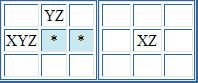

Sudoku Solving Techniques - XYZ-WingThis is a variation of an XY-wing. In the partial puzzle below, consider the cells that have only the candidates shown. Any cells that share a unit with all three cells XYZ, XY and YZ, can have Z eliminated from their candidates.  It can be easily seen that whichever value is in XYZ, the cell marked with the asterisk cannot be Z. if XYZ = X, then XZ = Z, so * cannot be Z Back to Sudoku Solving Techniques
|